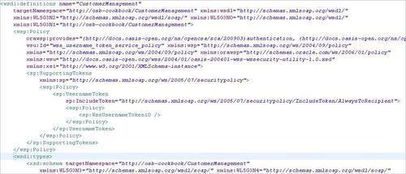
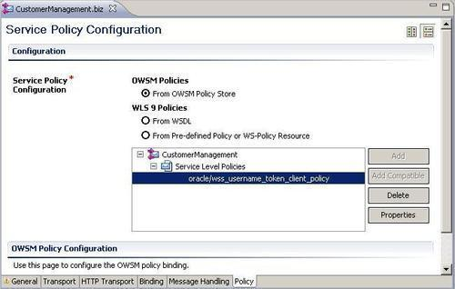
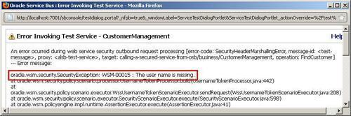
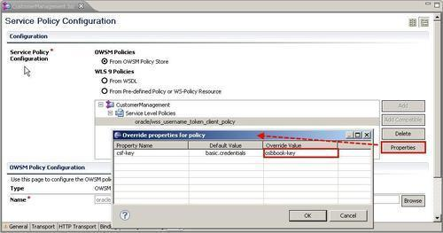
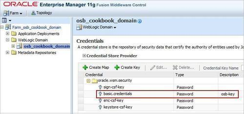

In this recipe, we will call a secured web service by adding an OWSM client policy to a business service. For this we create a new business service that uses the WSDL of our previous recipe. This WSDL contains the OWSM server policy.
For this we will use a simple OSB project with one proxy. Import the getting-ready project into Eclipse OEPE from \chapter-11\getting-ready\calling-a-secured-service-form-OSB. Make sure that the solution from the Securing a proxy service using username and password authentication through OWSM recipe is deployed to the OSB server.
Open the WSDL of the secured proxy service and check whether the WSDL contains some WS-Security policies. In Eclipse OEPE, perform the following steps:
wsdl folder of the calling-a-secured-service-from-osb project.
<WL5G3N2:address location="http://localhost:7001/securing-a-proxy-service-with- username-token/proxy/CustomerManagement" />
Next we will create a business service and add the necessary OWSM client policy to this service so that it will properly authenticate itself against the service provider.
In Eclipse OEPE, perform the following steps:
business folder, right-click and select New | Business Service. CustomerManagement.wsdl is used.
To test it, perform the following steps in the Service Bus console:

This is due to the fact that the business service is by default using the credential with the name basic.credentials from the credential store. Since we have not yet configured it, we get the error. We can either configure the basic credential or overwrite the default on the policy configuration on the business service.
Here we will show and use the second approach and overwrite the default value on the policy. In Eclipse OEPE, perform the following steps:
osbbook-key into the Override Value column of the csf-key row.
Retest the business service as shown previously from the Service Bus console. The test should now be successful.
The business service can detect the WS-Security policies from the WSDL and Eclipse OEPE tries to find the matching OWSM client policies.
It's not required to use the Add Compatible button; we can also use the Add button and choose the matching OWSM client policy manually.
In this section, we will cover how to configure the business service to work with the default credential and how to specify the key used for encryption and signing if message protection is enabled on a business service.
In order to not have to overwrite the default value on the policy of the business service, we need to create a basic.credentials credential in the oracle.wsm.security security map of the credential store.
We have seen how to create the osbbook-key credential both from the Enterprise Manager as well as on the command line through WLST in the Configuring OSB server for OWSM recipe
After configuring the basic.credentials, it should be shown in the list of credentials of the oracle.wsm.security map.
